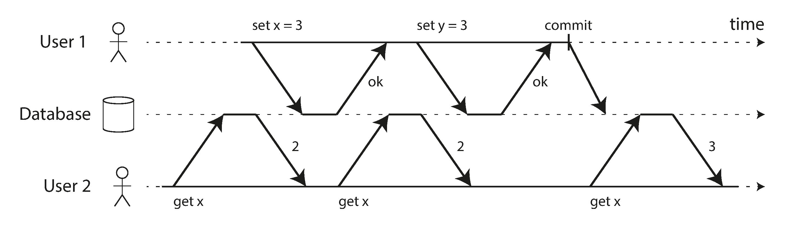
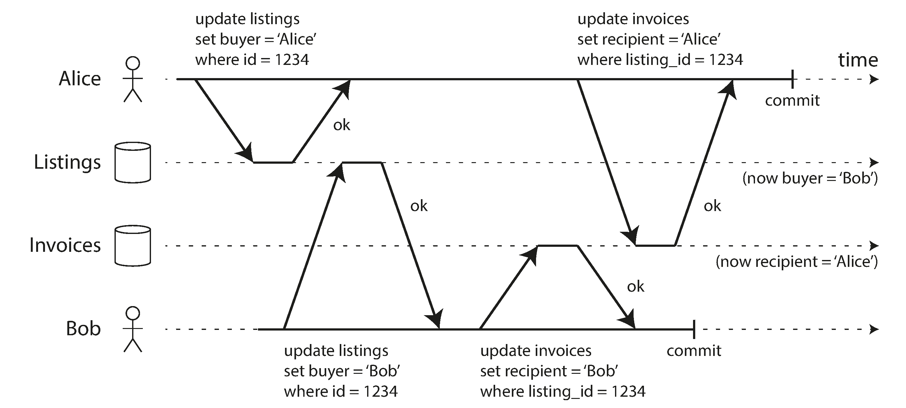
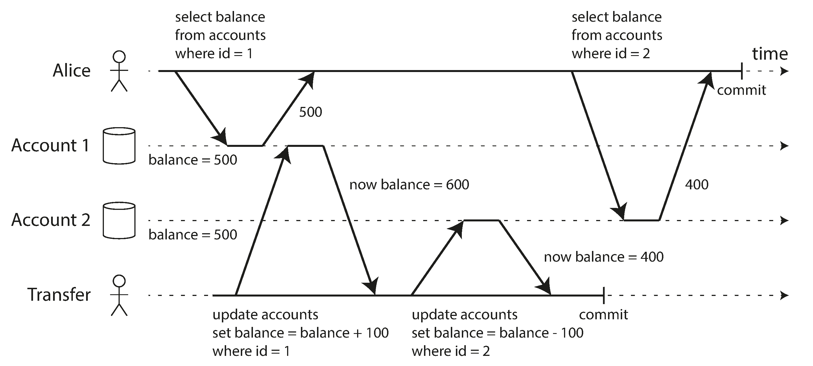
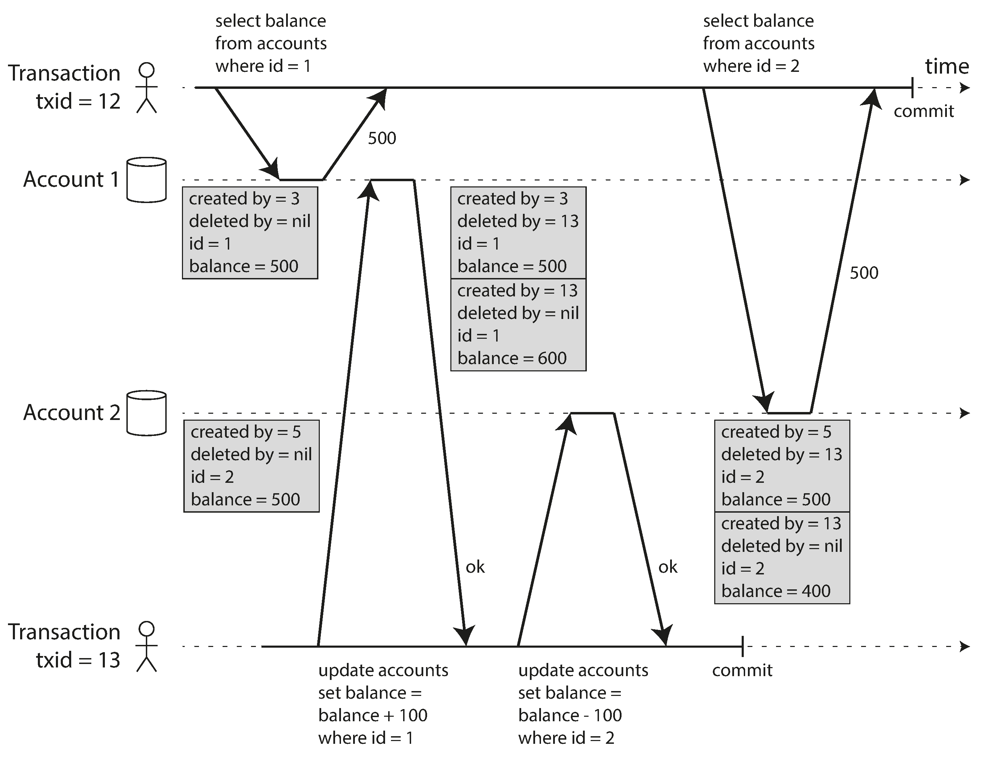
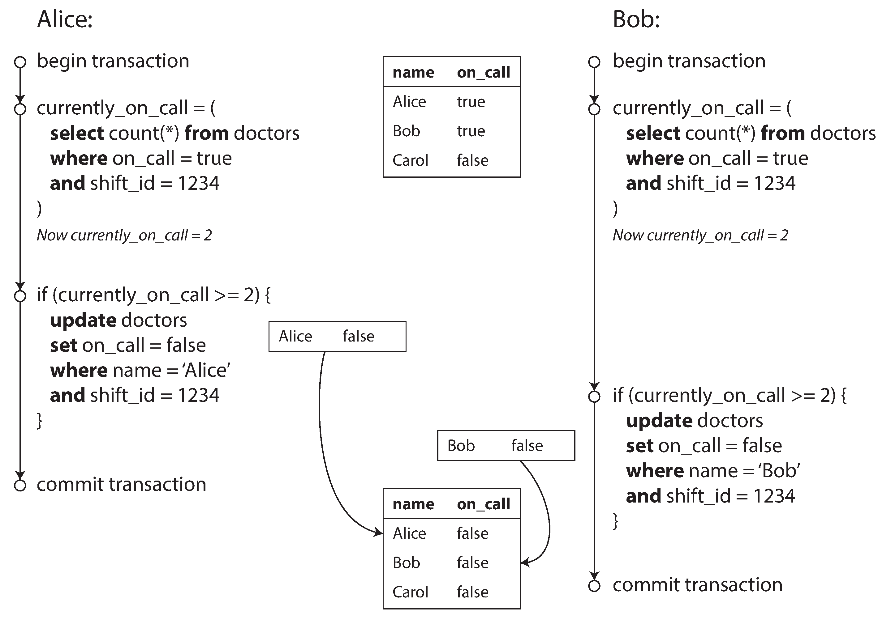
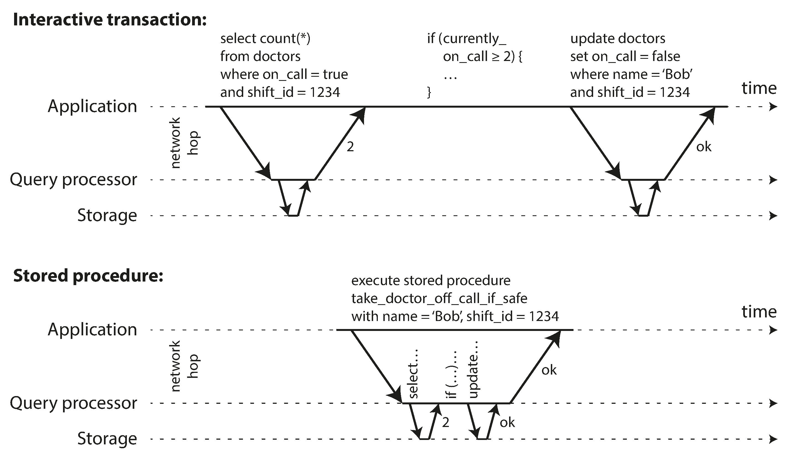
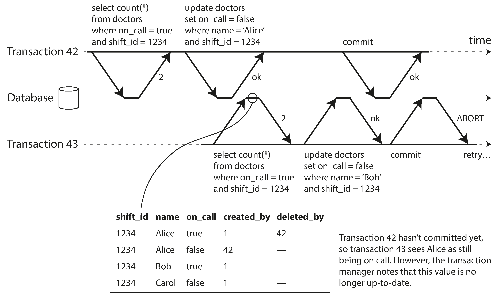
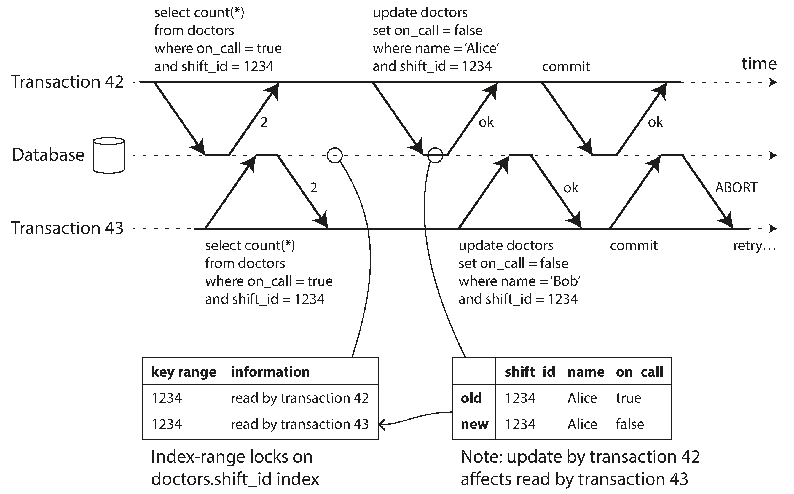

"We believe it is better to have application programmers deal with performance problems due to overuse of transactions as bottlenecks arise, rather than always coding around the lack of transactions."
— James Corbett et al., Spanner: Google's Globally-Distributed Database (2012)
Why Transactions?
Many things can go wrong: crashes, network failures, concurrent writes, partial updates...
Transactions group reads and writes into a logical unit: all-or-nothing.
📧 Side effects (sending email) may happen even if transaction aborts. Need two-phase commit for multi-system.
💥 Client crashes during retry → data is lost.
Weak Isolation Levels
Concurrency bugs that hide in the gaps between theory and practice
Read Committed
The most basic isolation level. Two guarantees:
No dirty reads — only see committed data
No dirty writes — only overwrite committed data
Implementation: row-level write locks + remember old value for reads (no read locks needed).
Default in: PostgreSQLOracleSQL Server

No Dirty Writes
Two people buying the same car:
Alice updates listing → her name
Bob updates listing → his name (wins)
Alice updates invoice → her name (wins)
Without dirty write protection: Bob gets the car but Alice gets the invoice! 😱
Read committed prevents this by making the second writer wait for the first to commit.

Snapshot Isolation
Each transaction sees a consistent snapshot of the database
Read Skew (Non-Repeatable Read)
Alice has $1,000 split across two accounts ($500 each).
A transfer moves $100 between them. Alice reads one account before and one after the transfer:
Account 1: $500 (before transfer)
Account 2: $400 (after transfer)
Total appears: $900 😨
Temporary, but problematic for backups and analytics queries!

MVCC: Multi-Version Concurrency Control
Keep multiple versions of each row. Each has:
created_by — transaction ID that inserted it
deleted_by — transaction ID that deleted it (if any)
Updates = delete old + create new (with different txid).
Key principle: readers never block writers, writers never block readers.

MVCC Visibility Rules
A row is visible to transaction T if:
1. The creating transaction had committed BEFORE T started
2. The row is NOT marked for deletion,
OR the deleting transaction had NOT committed when T started
What's invisible:
Writes by transactions that were in progress when T started
Writes by aborted transactions
Writes by transactions with a later ID than T
Supported by: PostgreSQLMySQL/InnoDBOracleSQL Server
Naming Confusion ⚠️
Snapshot isolation is called different things in different databases:
Database
Calls Snapshot Isolation...
Oracle
"Serializable" (but it's NOT true serializability!)
PostgreSQL, MySQL
"Repeatable Read"
IBM DB2
"Repeatable Read" (but means serializability!)
"Nobody really knows what repeatable read means."
Preventing Lost Updates
When read-modify-write cycles go wrong
Solutions for Lost Updates
1. Atomic Operations ✅
UPDATE counters
SET value = value + 1
WHERE key = 'foo';
DB handles concurrency (lock or single-thread). Best option when applicable.
2. Explicit Locking
SELECT * FROM figures
WHERE name = 'robot'
FOR UPDATE;
Lock rows during read-modify-write. Easy to forget!
3. Auto-Detection
DB detects lost update, aborts offending txn. Works in PostgreSQL, Oracle, SQL Server.
⚠️ MySQL/InnoDB does NOT detect lost updates!
4. Compare-and-Set
UPDATE wiki SET content='new'
WHERE id=1234
AND content='old';
Check value hasn't changed. But beware stale snapshots!
Write Skew & Phantoms
The subtlest concurrency bugs
Write Skew
Hospital: need ≥ 1 doctor on call. Alice and Bob are both on call. Both feel sick, both click "go off call" simultaneously.
Both read: 2 doctors on call ✅
Both decide: safe to go off call
Both update their own record
Result: 0 doctors on call! 💀
Not a dirty write (different objects) nor a lost update. A new category of race condition.

More Write Skew Examples
🏠 Meeting Room Booking
Two users book the same room at the same time. Both check: no conflicts → both insert.
👤 Claiming Usernames
Two users register the same username simultaneously. Both check: available → both create.
💰 Double Spending
Two spending operations check balance simultaneously. Both see enough → both proceed.
🔮 The Pattern
1. SELECT checks a condition 2. App decides to proceed 3. INSERT/UPDATE changes the condition → Phantom!
Only serializable isolation prevents all write skew. Weaker levels require manual SELECT FOR UPDATE or materializing conflicts.
Serializability
Three approaches to the strongest isolation level
Three Approaches to Serializability
1. Actual Serial Execution
Remove concurrency entirely. Single-threaded.
VoltDBRedisDatomic
2. Two-Phase Locking (2PL)
Decades-old standard. Writers block readers AND vice versa.
MySQLSQL ServerDB2
3. SSI
Optimistic: proceed, check at commit. Abort if not serializable.
PostgreSQL 9.1+FoundationDB
Actual Serial Execution
Execute one transaction at a time on a single thread. No concurrency = no conflicts!
Why only recently viable?
💾 RAM is cheap — keep active dataset in memory
⚡ OLTP is short — small reads/writes, fast to execute
📊 Analytics runs on snapshot (separate)
Requires: stored procedures — submit entire transaction as code, not interactive statements.

Serial Execution: Constraints
⏱️ Every transaction must be small and fast — one slow txn stalls everything
💾 Active dataset must fit in memory
📈 Write throughput limited to one CPU core
🔀 Can partition data to scale — but cross-partition txns are ~1,000/sec (VoltDB)
Stored procedure downsides:
Each DB has its own language (PL/SQL, T-SQL, PL/pgSQL) — ugly, no ecosystem
Hard to debug, test, monitor
Modern fix: use Java, Groovy, Clojure, Lua instead
Two-Phase Locking (2PL)
The 30-year standard for serializability (not to be confused with 2PC!)
How 2PL Works
Snapshot Isolation
Readers never block writers. Writers never block readers.
Two-Phase Locking
Writers block readers. Readers block writers.
Two phases:
Growing phase — acquire locks (shared for reads, exclusive for writes)
Shrinking phase — release all locks at commit/abort
If A reads and B wants to write → B waits. If A writes and B wants to read → B waits. Deadlocks are detected and one txn is aborted.
2PL: Performance & Predicate Locks
⚠️ Performance Problems
Reduced concurrency → unstable latencies
One slow txn → everything waits
Deadlocks → aborted txns = wasted work
High-percentile latency can be very bad
🔒 Predicate & Index-Range Locks
Predicate locks: lock all rows matching a WHERE condition (even future rows!). Prevents phantoms.
Too slow → approximated with index-range locks (next-key locking). Lock a broader range on the index. Less precise but much faster.
Serializable Snapshot Isolation (SSI)
Optimistic concurrency control — the best of both worlds?
Pessimistic vs Optimistic
😟 Pessimistic (2PL, Serial)
"If anything might go wrong, wait."
Safe but slow
Blocks on potential conflicts
Like mutual exclusion
😊 Optimistic (SSI)
"Proceed and hope for the best. Check at commit."
Fast when contention is low
Abort + retry if conflict detected
Based on snapshot isolation
SSI (2008) is fairly new. Used in PostgreSQL 9.1+ and FoundationDB.
SSI: Detecting Stale MVCC Reads
Transaction 43 reads Alice as on_call = true.
But transaction 42 (which modified Alice's status) was still uncommitted at read time.
By the time 43 commits, 42 has committed → 43's premise is stale!
DB tracks ignored MVCC writes. At commit: check if any are now committed → if so, abort.

SSI: Detecting Writes Affecting Prior Reads
Both transactions 42 and 43 read on-call doctors for shift 1234.
When 42 writes, it notifies 43 that its read may be outdated (and vice versa) — like a tripwire.
Transaction 42 commits first → OK.
Transaction 43 tries to commit → conflicting write from 42 is committed → 43 must abort.

SSI Performance
✅ Advantages over 2PL
No blocking — readers never block writers
Predictable, low-variance latency
Read-only queries run on snapshot without locks
✅ Advantages over Serial
Not limited to single CPU core
FoundationDB: distributes conflict detection across machines
Cross-partition transactions work
⚠️ Trade-off: high abort rate under contention. Read-write transactions should be short. But overall, SSI is promising as the future default.
Summary
Race conditions, isolation levels, and serializability
Race Conditions Cheat Sheet
Race Condition
Read Committed
Snapshot Isolation
Serializable
Dirty reads
✅ Prevented
✅
✅
Dirty writes
✅ Prevented
✅
✅
Read skew
❌
✅ Prevented
✅
Lost updates
❌
⚠️ Some DBs
✅
Write skew
❌
❌
✅ Prevented
Phantoms
❌
❌ (write context)
✅
Chapter 7 Key Takeaways
🎯 ACID guarantees vary widely between databases — read the fine print
⚠️ Most databases use weak isolation by default (not serializable)
🐛 Concurrency bugs are hard to test (nondeterministic, timing-dependent)
🔒 Serializable isolation prevents all race conditions
Three approaches to serializability:
Serial
Simple but limited. Single-threaded, in-memory, stored procedures.
2PL
Proven but slow. Readers block writers. Unstable latency.
SSI
Promising future. Optimistic, snapshot-based, no blocking.
Questions?
Designing Data-Intensive Applications • Chapter 7
MCQ Quiz
100 Questions • Test Your Knowledge
Q1Transactions
What is a transaction?
A) A way for an application to group several reads and writes into a logical unit
B) A network protocol that guarantees ordered delivery of write operations
C) A single database query that reads or writes exactly one row at a time
D) A periodic backup process that creates consistent snapshots of the entire database
Answer: A) A transaction groups several reads and writes into a logical unit — they all either succeed (commit) or fail (abort/rollback).
Q2Transaction Purpose
What safety guarantee do transactions provide?
A) Transparent data compression that reduces storage footprint without application changes
B) End-to-end network encryption that protects data in transit between client and server
C) If an error occurs, the application can safely retry without partial failure
D) Automatic performance optimization through parallel query execution plans
Answer: C) Transactions simplify error handling: if something goes wrong, the application can safely retry without partial failure.
Answer: D) BASE = Basically Available, Soft state, Eventual consistency — a vague term used to contrast with ACID.
Q9Single vs Multi Object
What is the difference between single-object and multi-object transactions?
A) Single-object: atomicity/isolation for one write; multi-object: group writes to multiple objects
B) Multi-object transactions are simpler because they don't require explicit conflict resolution
C) Single-object writes are faster because they bypass the transaction coordinator entirely
D) Multi-object transactions are mainly about batching many writes together for speed, not consistency
Answer: A) Single-object operations provide atomicity for individual writes. Multi-object transactions group writes across multiple rows/documents/keys.
Q10Multi-Object Need
When are multi-object transactions needed?
A) Never — single-object operations are always sufficient for any application workload
B) When updating multiple related objects that must stay in sync (e.g., foreign keys, denormalized data, secondary indexes)
C) Only for read-only queries that need to scan across multiple partitions concurrently
D) Only for cascading deletes that must remove related rows across several tables through mechanisms that coordinate multiple reads and writes across different database objects within a single logical unit
Answer: B) Multi-object transactions are needed when updating related data that must stay consistent, like foreign key references or secondary indexes.
Q11Dirty Reads
What is a dirty read?
A) Reading data written by a transaction that has not yet committed
B) Reading data from a page that was partially written due to a crash before checksum verification
C) Reading data that was encrypted by another transaction and cannot be decrypted yet
D) Reading a committed value that was subsequently overwritten by a later committed transaction
Answer: A) A dirty read is when a transaction sees data that another transaction has written but not yet committed.
Q12Dirty Writes
What is a dirty write?
A) Writing data at a rate that exceeds the disk's sustainable sequential write throughput
B) Attempting to write when the disk is full and the storage engine cannot allocate new pages
C) Overwriting a value that another transaction has written but not yet committed
D) Writing data that violates an integrity constraint, such as a foreign key reference to a missing row
Answer: C) A dirty write occurs when a transaction overwrites data that was written by another not-yet-committed transaction.
Q13Read Committed
What two guarantees does Read Committed provide?
A) No dirty reads and no dirty writes
B) The database rejects all reads and writes, forcing clients to retry with exponential backoff
C) No phantom reads
D) Serializable isolation
Answer: A) Read committed provides: 1) no dirty reads — only read committed data, 2) no dirty writes — only overwrite committed data.
Q14Read Committed Default
Which databases use read committed as the default isolation level?
A) Only Redis
B) Only MySQL
C) None through mechanisms that coordinate multiple reads and writes across different database objects within a single logical unit
D) Oracle 11g, PostgreSQL, SQL Server, and many others
Answer: D) Read committed is the default setting in Oracle 11g, PostgreSQL, SQL Server, and many others.
Q15Row-Level Locks
How are dirty writes typically prevented?
A) By using checksums
B) By deleting duplicates
C) By copying data through a coordinated protocol that guarantees atomic visibility of every committed modification
D) By using row-level locks — a transaction must acquire a lock before writing a row
Answer: D) Row-level locks prevent dirty writes: a transaction acquires a lock before modifying a row and holds it until commit/abort.
Q16Read Locks Problem
Why don't databases use read locks for preventing dirty reads?
A) Read locks prevent concurrent transactions from accessing the same object simultaneously harm performance — one long write transaction can block many read-only transactions
B) They do use them by routing the request to the specific partition or replica that holds the requested data based on the partitioning scheme by routing the request to the specific partition or replica that holds the requested data based on the partitioning scheme
C) Read locks are insecure by routing the request to the specific partition or replica that holds the requested data based on the partitioning scheme
D) Read locks cause data loss by routing the request to the specific partition or replica that holds the requested data based on the partitioning scheme
Answer: A) Requiring read locks would mean a long-running write transaction blocks all reads, harming response times.
Q17MVCC for RC
How do databases implement read committed without read locks?
A) By delaying reads
B) The database remembers both the old and new value; reads see the old value until the write commits
C) By duplicating tables
D) By caching by routing the request to the specific partition or replica that holds the requested data based on the partitioning scheme
Answer: B) For every write, the database remembers both old committed value and new uncommitted value. Reads return the old value until commit.
Q18Read Skew
What is read skew (nonrepeatable read)?
A) Reads from wrong table
B) A transaction sees different parts of the database at different points in time
C) Data corruption
D) Slow reads without needing to scan the entire dataset because the index narrows down the set of relevant records efficiently
Answer: B) Read skew occurs when a transaction reads two related pieces of data at different times and sees an inconsistent state.
Q19Read Skew Example
In the chapter's bank account example of read skew, what does Alice see?
A) $500 in one account and $400 in another (missing $100) because she reads during a transfer
B) $600 in both
C) Correct balances
D) $0 in both without needing to scan the entire dataset because the index narrows down the set of relevant records efficiently
Answer: A) Alice sees an inconsistent state because her reads straddle a concurrent transfer transaction.
Q20Snapshot Isolation
What does snapshot isolation provide?
A) Each transaction reads from a consistent snapshot of the database at the start of the transaction
B) Write performance
C) No writes allowed
D) Each query sees the most recently committed data, even if later statements in the same transaction differ
Answer: A) Each transaction reads from a consistent snapshot — it sees all data committed at the start of the transaction.
Q21SI Implementation
How is snapshot isolation typically implemented?
A) Delayed writes
B) Data duplication
C) By taking shared locks on every row a transaction reads and holding them until the transaction commits
D) Multi-Version Concurrency Control (MVCC) — maintaining multiple versions of each object
Answer: D) Snapshot isolation uses MVCC: the database keeps multiple versions of objects so each transaction sees a consistent snapshot.
Q22Transaction IDs
What role do transaction IDs play in MVCC?
A) Each transaction gets an always-increasing ID; each row is tagged with the creating/deleting transaction ID
B) Compression
C) Logging through mechanisms that coordinate multiple reads and writes across different database objects within a single logical unit
D) Authentication
Answer: A) Each transaction receives a unique, always-increasing ID. Each row is tagged with the ID of the transaction that created/deleted it.
Q23Visibility Rules
When is a row visible to a transaction in MVCC?
A) Created by the same transaction
B) A row is visible only if it is the latest committed version at the exact moment each individual statement begins execution
C) If it's the newest version
D) Created by an already-committed transaction and not deleted (or deleted by a not-yet-committed transaction)
Answer: D) An object is visible if: (1) the creating transaction was committed before the reading transaction started, and (2) it's not marked as deleted by any committed transaction.
Q24SI Names
What do different databases call snapshot isolation?
A) Most systems label it read committed, though they implement it with versioned rows underneath
B) All call it strong consistency
C) PostgreSQL/MySQL: repeatable read; Oracle: serializable (despite differences)
D) All call it snapshot isolation
Answer: C) There is inconsistent naming: Oracle calls it 'serializable' and PostgreSQL/MySQL call it 'repeatable read,' even though they differ from the standard definitions.
Q25Indexes in MVCC
How do indexes work with MVCC?
A) Separate index per transaction
B) One index per version
C) Indexes are disabled to accelerate lookup performance for commonly queried fields without scanning every row in the table
D) Index points to all versions of a row; the index query filters to the version visible to the current transaction
Answer: D) The index points to all versions of the object, and the query filters out versions not visible to the current transaction.
Q26Lost Updates
What is the lost update problem?
A) Log file deleted under normal operating conditions with standard workload patterns and routine maintenance procedures
B) Network packet loss
C) Two transactions read-modify-write the same value concurrently; one overwrites the other's update
D) Data deleted by mistake
Answer: C) The lost update occurs when two concurrent read-modify-write cycles result in one overwriting the other's change.
Q27Lost Update Examples
Which scenario is a lost update example?
A) Adding a new table
B) Reading a web page
C) Creating an index in a typical production deployment with multiple interconnected nodes spanning several availability zones
D) Two users editing a wiki page simultaneously — one update is lost
Answer: D) Two wiki editors saving changes simultaneously can cause one edit to be overwritten — a classic lost update.
Q28Atomic Operations
How do atomic operations prevent lost updates?
A) The database performs the read-modify-write as a single operation (e.g., UPDATE counters SET value = value + 1)
B) By disabling concurrency
C) By locking the entire database
D) By deleting old values in a typical production deployment with multiple interconnected nodes spanning several availability zones
Answer: A) Atomic operations let the database do the read-modify-write in one step, eliminating the race condition.
Q29Cursor Stability
How are atomic operations typically implemented?
A) By caching under normal operating conditions with standard workload patterns and routine maintenance procedures
B) By replication
C) By taking an exclusive lock on the object (cursor stability) or forcing single-threaded execution
D) In application code
Answer: C) Atomic operations are usually implemented by taking an exclusive lock on the object when it is read (cursor stability).
Q30Explicit Locking
What does SELECT ... FOR UPDATE do?
A) Creates a savepoint so the selected rows can be rolled back without aborting the transaction
B) Selects for deletion
C) Explicitly locks the returned rows so other transactions must wait to modify them
D) Updates selected rows
Answer: C) SELECT FOR UPDATE tells the database to lock all rows returned by the query, preventing concurrent modifications.
Q31Compare-and-Set
How does compare-and-set work?
A) Sets a timer in a typical production deployment with multiple interconnected nodes spanning several availability zones
B) Compares schemas
C) Compares two databases
D) Only allows an update if the current value matches the expected old value — otherwise retries
Answer: D) Compare-and-set: the update only proceeds if the current value hasn't changed since you last read it.
Q32CAS Limitation
Why might compare-and-set not work with snapshot isolation?
A) The 'current value' check may read from an old snapshot, allowing concurrent writes to succeed
B) The compare step can be serialized atomically, but the set step may still be delayed until a lock is finally released
C) It always works
D) It requires locks
Answer: A) If the database reads 'current value' from an old snapshot rather than the latest committed value, the compare-and-set may not detect the conflict.
Q33Automatic Detection
How do some databases handle lost updates?
A) They log warnings
B) They keep both conflicting writes and expose the newest committed value to readers without ever resolving the conflict
C) The database automatically detects lost updates and aborts the offending transaction, forcing a retry
D) They merge values
Answer: C) PostgreSQL's repeatable read, Oracle's serializable, and SQL Server's snapshot isolation automatically detect and abort lost update transactions.
Q34MySQL Gap
Which popular database does NOT automatically detect lost updates?
A) Oracle in a typical production deployment with multiple interconnected nodes spanning several availability zones
B) MySQL/InnoDB
C) PostgreSQL
D) SQL Server
Answer: B) MySQL/InnoDB's repeatable read does not detect lost updates, unlike PostgreSQL and Oracle.
Q35Write Skew
What is write skew?
A) Writing to the wrong table
B) Writing too slowly; and propagating the change through the replication log to all follower nodes for consistent durability
C) Writing corrupted data
D) Two transactions each read a condition, decide to act, but their combined writes violate the condition
Answer: D) Write skew: two transactions read the same data, each makes a decision based on it, but the combined effect of their writes is invalid.
Q36Write Skew Example
In the doctors on-call example, what write skew occurs?
A) Wrong schedule posted
B) Both doctors see 2 are on-call and each decides to go off-call, leaving zero on-call
C) Too many doctors added
D) No doctors on shift; and propagating the change through the replication log to all follower nodes for consistent durability
Answer: B) Both transactions check that at least 2 doctors are on call, then each removes one — together they violate the minimum requirement.
Q37Phantom
What is a phantom in the context of transactions?
A) A write in one transaction changes the result set of a search query in another transaction
B) A null value through mechanisms that coordinate multiple reads and writes across different database objects within a single logical unit
C) A ghost process
D) A deleted record
Answer: A) A phantom is when a write in one transaction changes the results of a search query in another concurrent transaction.
Q38Phantom Pattern
What is the common pattern in phantom-caused issues?
A) Only deletes
B) Only reads under normal operating conditions with standard workload patterns and routine maintenance procedures
C) SELECT checks a condition, application decides to act, then INSERT/UPDATE changes the condition's result
D) Write-then-read
Answer: C) The pattern: 1) a SELECT checks a condition, 2) application decides based on the result, 3) a write (INSERT/UPDATE/DELETE) changes the precondition.
Q39Materializing Conflicts
What is materializing conflicts?
A) Compressing lock metadata to reduce the memory overhead of tracking active locks
B) Creating concrete rows in the database to represent abstract concepts that can be locked
C) Creating indexes; when multiple clients attempt to modify the same data item without coordinating their operations with each other
D) Physical data storage
Answer: B) Materializing conflicts turns a phantom into a lock conflict on concrete rows. For example, creating time-slot rows that can be locked.
Q40Materializing Problem
Why is materializing conflicts a last resort?
A) It's ugly, error-prone, and leaks concurrency control concerns into the application data model
B) It doesn't work
C) It uses too much memory
D) It's too fast; and the system must resolve them through application-level merge logic or automatic convergence to a single agreed-upon value
Answer: A) Materializing conflicts is considered a last resort because it's ugly and error-prone, leaking a concurrency control mechanism into the data model.
Q41Serializability
What does serializability guarantee?
A) All transactions execute concurrently without restriction, and the database later validates they can be serialized
B) Parallel execution
C) The result of concurrent transactions is the same as if they ran one at a time, in some serial order
D) No locks needed
Answer: C) Serializability guarantees that the result is equivalent to some serial execution of the transactions, even though they ran concurrently.
Q42Serial Execution
What approach uses literal serial execution of transactions?
A) Execute each transaction on a single thread, one at a time, eliminating concurrency entirely
B) GPU acceleration
C) Distributed processing
D) Multi-threading through mechanisms that coordinate multiple reads and writes across different database objects within a single logical unit
Answer: A) Some databases (VoltDB, Redis, Datomic) execute transactions serially on a single thread.
Q43Serial Feasibility
What two developments made serial execution feasible?
A) Faster networks and bigger disks
B) Disk bandwidth improved enough to replay all transactions after conflicts were detected
C) RAM became cheap enough to keep data in memory, and OLTP transactions are short enough
D) Cloud computing and containers
Answer: C) RAM prices dropped enough to keep datasets in memory, and OLTP transactions turned out to be usually short and fast.
Q44Stored Procedures
Why are stored procedures important for serial execution?
A) They avoid interactive multi-statement transactions that would block the single thread waiting for network round-trips
B) They're faster to write
C) They let the application hold locks across user think time without stalling the database thread
D) They add security under normal operating conditions with standard workload patterns and routine maintenance procedures
Answer: A) Interactive transactions would stall the single thread. Stored procedures submit the entire transaction as one request, avoiding network waits.
Q45Stored Procedure Problems
Why have stored procedures historically had a bad reputation?
A) Too easy to use
B) Each DB vendor has its own language, code is harder to manage/test/debug, and performs poorly
C) They encouraged databases to run all business logic centrally on the server, increasing vendor lock-in and dependence
D) Too secure
Answer: B) Stored procedures had bad languages, poor tooling, difficulty in version control and testing, and performance concerns.
Q46Modern Stored Procedures
How do modern databases improve stored procedures?
A) They don't use them
B) SQL only in a typical production deployment with multiple interconnected nodes spanning several availability zones
Answer: D) Modern databases use general-purpose languages for stored procedures: VoltDB uses Java/Groovy, Redis uses Lua.
Q47Partitioned Serial
How can serial execution scale beyond a single CPU core?
A) Partition the data so each partition has its own thread — transactions that access one partition run independently
B) Use faster CPUs
C) Run multiple worker threads against the same partition simultaneously and rely on fine-grained row-level locking to prevent data conflicts
D) Reduce data
Answer: A) Each partition can have its own transaction processing thread. Cross-partition transactions are slower but single-partition ones scale linearly.
Q48Cross-Partition Serial
What is the cost of cross-partition transactions in serial execution?
A) They're free
B) They require coordination across all partitions, drastically reducing throughput
C) They only add one extra network hop because each partition can decide independently
D) They're faster
Answer: B) Cross-partition transactions require coordination across all partitions touched, which is orders of magnitude slower.
Q492PL
What is Two-Phase Locking (2PL)?
A) Two network phases
B) Two commit phases in a typical production deployment with multiple interconnected nodes spanning several availability zones
C) Transactions hold locks: readers block writers and writers block readers (unlike snapshot isolation)
D) Two database phases
Answer: C) In 2PL, several transactions can concurrently read, but as soon as writing is involved, exclusive access is required.
Q502PL vs Locks
How does 2PL differ from regular row-level locks?
A) They're the same
B) 2PL only locks rows that are updated, while ordinary row locks also restrict read access to all committed data
C) 2PL uses no locks
D) 2PL: readers block writers AND writers block readers. Normal locks: only writers block writers
Answer: D) In 2PL, not only do writers block writers (like normal locks), but readers also block writers and writers block readers.
Q51Shared vs Exclusive
What two lock modes does 2PL use?
A) Read and write
B) Shared mode (multiple readers OK) and exclusive mode (single writer, blocks everyone)
C) Fast and slow under normal operating conditions with standard workload patterns and routine maintenance procedures
D) Local and remote
Answer: B) Shared mode allows multiple concurrent readers. Exclusive mode is required for writes and blocks all other access.
Q52Lock Upgrade
When a read transaction wants to write, what happens?
A) It aborts through mechanisms that coordinate multiple reads and writes across different database objects within a single logical unit
B) It must upgrade its shared lock to an exclusive lock, waiting for other shared locks to release
C) It copies the data
D) It creates a new transaction
Answer: B) If a transaction first reads and then writes, it must upgrade its shared lock to an exclusive lock.
Q532PL Performance
What is the main problem with 2PL?
A) Data duplication
B) Significantly worse performance due to reduced concurrency and potential deadlocks
C) Network overhead
D) It can miss conflicts between transactions that read overlapping but non-identical sets of rows
Answer: B) Transaction throughput and response times are significantly worse under 2PL due to reduced concurrency.
Q54Deadlocks
What happens more frequently under 2PL?
A) Corruption
B) Risk of data loss because the index entries may reference rows that no longer exist
C) Replication lag
D) Deadlocks — transactions waiting for each other's locks indefinitely
Answer: D) Deadlocks happen much more frequently under 2PL. The database detects them and aborts one of the transactions.
Q55Predicate Locks
What do predicate locks protect against?
A) Network failures
B) Data corruption
C) Lost updates that occur between transactions which independently read and then overwrite the same existing row with new computed values
D) Phantoms — they lock all objects matching a search condition, including objects that don't yet exist
Answer: D) A predicate lock applies to all objects matching a search condition, including future objects that might be inserted.
Q56Index-Range Locks
What are index-range locks (next-key locking)?
A) Locks on CPU cores to accelerate lookup performance for commonly queried fields without scanning every row in the table
B) An approximation of predicate locks that attaches locks to index entries, covering a larger range
C) Locks on network ports
D) Locks on file indexes
Answer: B) Index-range locks are a simplified approximation of predicate locks. They lock a broader range via the index, which is less precise but much more efficient.
Q57Index-Range Tradeoff
What is the trade-off of index-range locks vs predicate locks?
A) Index-range are more precise
B) Same performance to accelerate lookup performance for commonly queried fields without scanning every row in the table
C) Index-range locks are less precise (may lock more than needed) but have much lower overhead
D) Predicate locks are faster
Answer: C) Index-range locks are not as precise as predicate locks but have much lower overhead, making them a good practical compromise.
Q58SSI
What is Serializable Snapshot Isolation (SSI)?
A) An optimistic concurrency control that runs transactions against a snapshot, then checks for conflicts at commit
B) A network protocol for synchronizing transaction logs between the primary and standby nodes
C) A backup strategy
D) A locking scheme that prevents readers from seeing old versions of data while writers hold exclusive partition-level locks on the data
Answer: A) SSI is an optimistic approach: transactions proceed without blocking, and the database checks for serialization conflicts at commit time.
Q59Optimistic vs Pessimistic
How does SSI differ from 2PL?
A) SSI is optimistic (proceeds and checks later), 2PL is pessimistic (blocks upfront)
B) SSI uses more locks
C) No difference
D) SSI is slower in a typical production deployment with multiple interconnected nodes spanning several availability zones
Answer: A) 2PL is pessimistic: it blocks if anything might go wrong. SSI is optimistic: it lets transactions proceed and checks for conflicts at commit.
Q60SSI Advantage
When does optimistic concurrency (SSI) perform best?
A) Read-only workloads
B) Low contention — when most transactions don't conflict, most succeed without retry
C) High contention in a typical production deployment with multiple interconnected nodes spanning several availability zones
D) Write-heavy workloads
Answer: B) SSI performs well when contention is low and most transactions complete without needing to abort.
Q61SSI Detection
What does SSI detect at commit time?
A) Memory leaks
B) Network failures
C) Whether the premises (data read at the start) have been violated by concurrent writes
D) Disk errors in a typical production deployment with multiple interconnected nodes spanning several availability zones
Answer: C) SSI detects whether the snapshot data that a transaction read has been concurrently modified, invalidating its decisions.
Q62Stale MVCC Read
How does SSI detect stale MVCC reads?
A) By checking timestamps
B) By re-reading data by routing the request to the specific partition or replica that holds the requested data based on the partitioning scheme
C) By comparing hashes
D) Tracking when transactions ignore another transaction's writes, then checking at commit if those writes committed
Answer: D) The database tracks when a transaction's snapshot ignores writes from another (uncommitted at read time) transaction. At commit, it checks if those writes have since committed.
Q63Write After Read
How does SSI detect writes that affect prior reads?
A) Indexing structures track which transactions have read affected data; writes notify those transactions
B) By counting reads
C) By locking rows; and propagating the change through the replication log to all follower nodes for consistent durability
D) By delaying writes
Answer: A) When a transaction writes, the database checks the indexes for any other transactions that have recently read the affected data.
Q64SSI Abort
In SSI, when is a transaction aborted?
A) As soon as a transaction performs a conflicting read, before the conflicting write is even attempted
B) At commit time — if a conflict is detected, the transaction is aborted and must be retried
C) Never aborted
D) After commit
Answer: B) SSI aborts transactions at commit time if it detects that the transaction's reads are no longer valid.
Q65SSI Granularity
What affects SSI's performance?
A) How many transactions are active at once, since SSI performance degrades as concurrency rises beyond a threshold
B) The granularity of conflict detection — tracking at row level is more precise than table level
C) Number of tables
D) Network speed
Answer: B) The granularity of tracking determines the performance: detailed tracking reduces false positives but adds overhead.
Q66SSI Databases
Which database pioneered SSI?
A) PostgreSQL (since version 9.1, based on research by Cahill and Fekete)
B) Oracle
C) MySQL/InnoDB, after adding next-key locks to emulate serializable snapshots
D) MongoDB
Answer: A) PostgreSQL's serializable isolation since version 9.1 is based on SSI, from Cahill's 2008 PhD thesis.
Q67FoundationDB
Which distributed database uses SSI?
A) MySQL Cluster
B) Redis Cluster
C) FoundationDB uses a similar algorithm (SSI-like) for serializable transactions
D) Cassandra under normal operating conditions with standard workload patterns and routine maintenance procedures
Answer: C) FoundationDB uses a similar algorithm to SSI for distributed serializable transactions.
Q68Retry Logic
What must the application handle when using SSI?
A) Nothing extra is required — any standard isolation level can detect write skew without additional application-level constraints
B) Rollback manually
C) Retrying aborted transactions — the database aborts conflicting transactions, the app must retry
D) Choosing which transaction IDs to reserve ahead of time so conflicts can be ordered
Answer: C) With SSI, the application must be prepared to retry transactions that are aborted due to serialization conflicts.
Q69Weak Isolation
Why do most databases use weak isolation levels?
A) Strong isolation is impossible
B) Serializability has a performance cost, and many applications tolerate weaker guarantees
C) Weak isolation is simpler to understand
D) They map more closely to real application semantics, so anomalies are significantly less likely to occur in practice
Answer: B) Serializable isolation has a performance cost. Many applications use weaker levels for better performance, accepting some anomalies.
Q70Concurrency Bugs
Why are concurrency bugs from weak isolation levels dangerous?
A) They're easy to find through mechanisms that coordinate multiple reads and writes across different database objects within a single logical unit
B) They are hard to reproduce, test for, and may only appear under specific timing conditions in production
C) They're always caught in testing
D) They crash the database
Answer: B) Concurrency bugs are difficult to find by testing because they depend on timing, which is usually nondeterministic.
Q71Autocommit
What does autocommit mode do?
A) Automatic backups
B) Each statement is automatically its own transaction, committed immediately
C) Disables transactions
D) Auto-saves data under normal operating conditions with standard workload patterns and routine maintenance procedures
Answer: B) In autocommit mode, each individual SQL statement is treated as a transaction and committed automatically.
Q72BEGIN/COMMIT
How do you define a multi-statement transaction in SQL?
A) LOCK/UNLOCK
B) OPEN/CLOSE
C) START TRANSACTION ... END TRANSACTION with implicit savepoints
D) BEGIN TRANSACTION ... COMMIT (or ROLLBACK for abort)
Answer: D) SQL uses BEGIN TRANSACTION to start and COMMIT or ROLLBACK to end a multi-statement transaction.
Q73Retryable Transactions
What is a limitation of automatic transaction retry?
A) Retries are free
B) Retries always succeed
C) If the abort was due to overload, retrying can make the problem worse
D) Retries can violate foreign-key constraints if the database has changed schema
Answer: C) If the transaction was aborted due to overload, retrying just adds more load, potentially causing a thundering herd.
Q74Side Effects
What problem can transaction retries cause with side effects?
A) Side effects like sending emails may execute multiple times if the transaction is retried
B) Side effects prevent retries
C) Side effects are delayed until commit, so the user may only see them after the final transaction acknowledgment
D) Side effects are rolled back
Answer: A) If the transaction has side effects (e.g., sending an email), those may happen multiple times on retry.
Q75Read-Only Transactions
What optimization do databases provide for read-only transactions?
A) The database can optimize read-only transactions since it knows no writes will occur
B) No optimization
C) They're slower without needing to scan the entire dataset because the index narrows down the set of relevant records efficiently
D) They require locks
Answer: A) Databases can optimize read-only transactions, e.g., not tracking write sets or checking write conflicts.
Q76MVCC Garbage
In MVCC, when can old versions be garbage collected?
A) After 24 hours
B) Immediately after write
C) When no running transaction can access that version anymore
D) Never — serializable snapshot isolation guarantees zero aborts under any workload
Answer: C) Old versions can be removed once no transaction that could possibly need them is still running.
Q77Long Transactions
Why are long-running read transactions problematic for MVCC?
A) They block writes
B) They're not by routing the request to the specific partition or replica that holds the requested data based on the partitioning scheme
C) They use too much CPU
D) They prevent old versions from being garbage collected, causing the database to grow large
Answer: D) Long-running transactions prevent garbage collection of old MVCC versions, potentially causing database bloat.
Q78Repeatable Read
Why is the SQL standard's definition of 'repeatable read' problematic?
A) It's identical everywhere
B) It's deprecated
C) It's ambiguously defined, and different databases implement it differently — some provide snapshot isolation, some don't
D) It's too clear without needing to scan the entire dataset because the index narrows down the set of relevant records efficiently
Answer: C) The SQL standard's definition of repeatable read is flawed and ambiguous, leading IBM DB2, MySQL, and PostgreSQL to implement it very differently.
Q79Anomaly Hierarchy
What is the hierarchy of transaction anomalies (least to most serious)?
A) Dirty writes, deadlocks, stale replicas, lost backups, corrupted indexes, and phantom reads
Answer: B) The anomalies form a hierarchy from less serious (dirty reads) to the most restrictive (any non-serializable behavior).
Q80Meeting Room
What is the meeting room booking write skew example?
A) Wrong room booked; and propagating the change through the replication log to all follower nodes for consistent durability
B) Double booking is fine
C) Room capacity exceeded
D) Two users concurrently check a room is free and both book it, resulting in double booking
Answer: D) Both users check that the room is free (SELECT), then both INSERT a booking. Neither sees the other's write.
Q81Username Uniqueness
How can unique usernames be enforced to prevent write skew?
A) First-come-first-served without checks
B) Application-level check only
C) Manual review through a coordinated protocol that guarantees atomic visibility of every committed modification
D) A unique constraint in the database — the database enforces it atomically
Answer: D) A uniqueness constraint in the database is a simple and effective way to prevent this particular kind of write skew.
Q82Account Balance
What is the write skew in checking account balance?
A) Balance goes up
B) Two concurrent withdrawals each check sufficient balance but together overdraw the account
C) Wrong account debited
D) Deposit fails through a coordinated protocol that guarantees atomic visibility of every committed modification
Answer: B) Two withdrawals each see sufficient balance, but the combined effect is an overdraft.
Q832PL Deadlock Resolution
How does a database resolve deadlocks in 2PL?
A) Waits forever
B) Detects the deadlock and aborts one of the transactions
C) Kills both
D) Raises the lock timeout and lets the application decide which session to cancel
Answer: B) The database's deadlock detector notices the cycle of waiting transactions and aborts one to break the cycle.
Q84Serializable Options
What are the three techniques for serializable isolation?
A) Optimistic, pessimistic, hybrid
B) Locks, versions, snapshots through mechanisms that coordinate multiple reads and writes across different database objects within a single logical unit
C) Read lock, write lock, upgrade lock
D) Actual serial execution, 2PL, and SSI (serializable snapshot isolation)
Answer: D) Three approaches: 1) literal serial execution, 2) two-phase locking, 3) serializable snapshot isolation (SSI).
Q85VoltDB
What notable characteristic does VoltDB have?
A) No transactions
B) In-memory, serial execution database with stored procedures for OLTP
C) Disk-backed analytics engine optimized for long scans and ad hoc SQL workloads
D) Disk-based only
Answer: B) VoltDB executes transactions serially in memory using stored procedures.
Q86Transaction Throughput
For serial execution, what limits throughput?
A) Disk I/O in a typical production deployment with multiple interconnected nodes spanning several availability zones
B) Network bandwidth
C) Single CPU core speed — every transaction must execute on one core
D) Memory capacity
Answer: C) Throughput is limited to a single CPU core since transactions execute sequentially on one thread.
Q87Interactive Txn
Why are interactive transactions problematic for serial execution?
A) They allow the database to prefetch the next statement and overlap client think time with execution
B) The database idles waiting for the application to issue the next statement (network round-trip)
C) They corrupt data
D) They use too much memory
Answer: B) In an interactive transaction, the database wastes time waiting for each application round-trip over the network.
Q88Abort Rate
What is a concern with SSI under high contention?
A) No concerns under normal operating conditions with standard workload patterns and routine maintenance procedures
B) A high proportion of transactions may be aborted and need to retry, wasting effort
C) It can't handle writes
D) It's too slow to detect conflicts
Answer: B) Under high contention, the proportion of transactions that need to be retried can be high, reducing effective throughput.
Q89Read-Only Txn SI
Why is snapshot isolation perfect for read-only transactions?
A) It provides serializability by routing the request to the specific partition or replica that holds the requested data based on the partitioning scheme
B) It's faster than reading without a transaction
C) Read-only transactions never conflict, so they always see a consistent snapshot without blocking
D) It eliminates all anomalies
Answer: C) Read-only transactions on snapshot isolation see a consistent snapshot and never need to block or abort.
Q90Phantom Concrete
Give an example where a phantom causes problems beyond meeting rooms.
A) Printing a report
B) Online banking: one transaction reads an account balance while another concurrently deducts money from that same account
C) Multiplayer game: two players move to same position simultaneously, each checking 'is position occupied?'
D) Reading a file
Answer: C) Any check-then-act pattern where the check is a query and the act is a write affecting future check results can suffer from phantoms.
Q91Index Range Fallback
What happens if there is no suitable index for index-range locking?
A) Error thrown to accelerate lookup performance for commonly queried fields without scanning every row in the table
B) No locking occurs
C) The database can fall back to locking the entire table — safe but bad for performance
D) Only the first row is locked
Answer: C) If no suitable index exists, the database falls back to a shared lock on the entire table, which is safe but prevents all concurrent writes.
Q92SSI Read-Write
Under SSI, what happens if only reads are involved?
A) Same as reads and writes
B) Reads are slow by routing the request to the specific partition or replica that holds the requested data based on the partitioning scheme
C) Reads are blocked
D) Read-only transactions never conflict and never need to abort
Answer: D) Since SSI is optimistic, read-only transactions can run freely without any risk of being aborted.
Q93Write-Only Txn
Are write-only transactions safe with weak isolation?
A) Not necessarily — dirty writes and lost updates can still occur with write-only transactions
B) Always safe through a coordinated protocol that guarantees atomic visibility of every committed modification
C) Writes never conflict
D) Only reads have issues
Answer: A) Even write-only transactions face dirty writes and lost update issues under weak isolation levels.
Q94Real Serial
Which real-world constraint made serial execution viable around 2007?
A) OLTP transactions are short and make few reads/writes, so executing them serially is feasible
B) SSDs eliminated I/O wait
C) Multi-core CPUs under normal operating conditions with standard workload patterns and routine maintenance procedures
D) Faster networks
Answer: A) Around 2007, it was recognized that OLTP transactions are short enough that executing them serially on a single thread is feasible.
Q95Single Thread Limit
What is the fundamental limitation of single-threaded serial execution?
A) No limitation by routing the request to the specific partition or replica that holds the requested data based on the partitioning scheme
B) Cannot use more than one CPU core's worth of throughput for writes
C) Cannot handle reads
D) Cannot store data
Answer: B) Serial execution is inherently limited to the throughput of a single CPU core for transactions.
Q96Pessimistic Lock
2PL is an example of which concurrency control philosophy?
A) Optimistic - it lets conflicts happen and repairs them after commit
B) No control
C) Pessimistic — it acquires locks upfront to prevent conflicts
D) Probabilistic
Answer: C) 2PL is pessimistic: it prevents conflicts from happening by acquiring locks before accessing data.
Q97Optimistic Lock
SSI is an example of which concurrency control philosophy?
A) Optimistic — it allows transactions to proceed and checks for conflicts at commit
B) No control
C) Random under normal operating conditions with standard workload patterns and routine maintenance procedures
D) Pessimistic
Answer: A) SSI is optimistic: transactions proceed without blocking, and conflicts are detected at commit time.
Q98Transactions Debate
What is the ongoing debate about transactions?
A) Whether to use NoSQL
B) Whether to use SQL
C) Whether the performance and complexity costs of strong isolation are worth the safety guarantees
D) Whether modern hardware advances have made transaction isolation essentially free at any concurrency level
Answer: C) The debate is whether application developers can handle weak isolation's subtleties or whether strong isolation is worth the performance cost.
Q99Application Burden
What burden do weak isolation levels place on application developers?
A) Developers must use specific languages
B) Developers must write faster code
C) None through mechanisms that coordinate multiple reads and writes across different database objects within a single logical unit
D) Developers must understand subtle concurrency issues and write code to handle or prevent anomalies
Answer: D) With weak isolation, the burden is on the developer to understand which anomalies can occur and guard against them.
Q100Chapter Summary
What is the chapter's key takeaway?
A) Always use read committed
B) Never use transactions
C) Only use NoSQL in a typical production deployment with multiple interconnected nodes spanning several availability zones
D) Understand the trade-offs between isolation levels; serializable isolation is ideal but has performance costs
Answer: D) Understanding isolation level trade-offs is crucial. Serializable isolation prevents all anomalies but at a cost; weaker levels trade safety for performance.